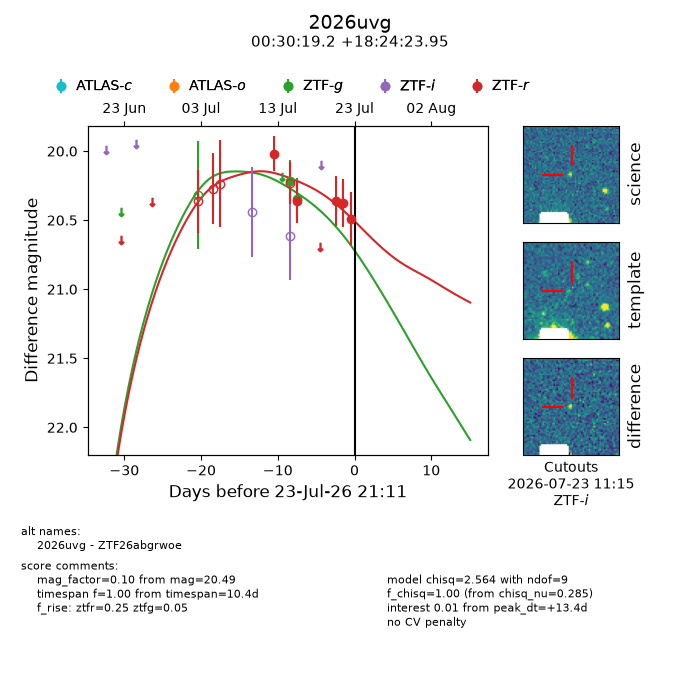
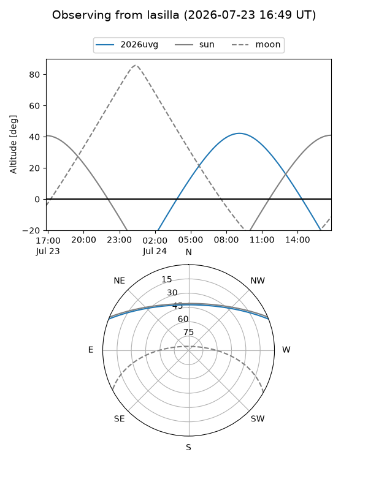
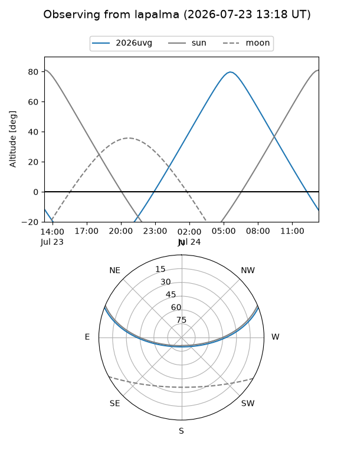
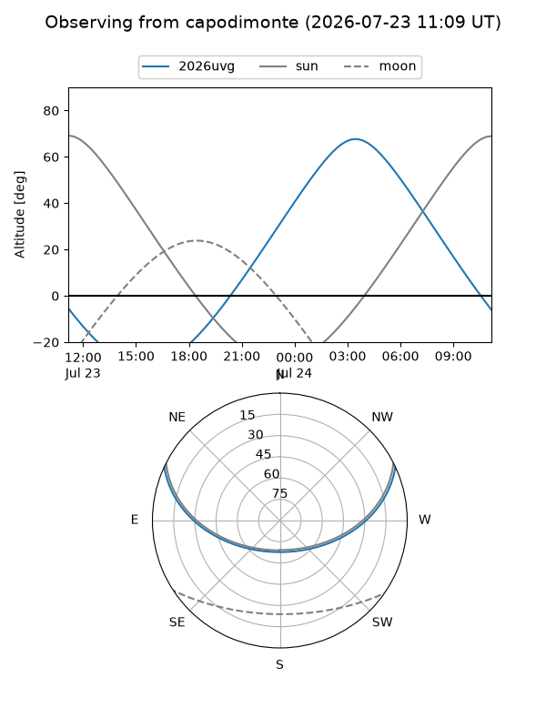
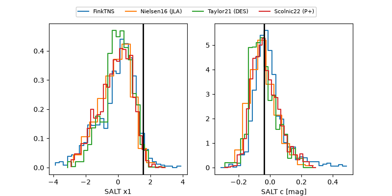

2026uvg
Target 2026uvg at 2026-07-23 21:14
Aliases and brokers:
FINK-ZTF: ztf.fink-portal.org/ZTF26abgrwoe
Lasair-ZTF: lasair-ztf.lsst.ac.uk/objects/ZTF26abgrwoe
ALeRCE-ZTF: alerce.online/object/ZTF26abgrwoe
YSE-PZ: ziggy.ucolick.org/yse/transient_detail/2026uvg
TNS name: wis-tns.org/object/2026uvg
Direct TNS query: direct search
alt names
ZTF26abgrwoe (ztf,fink_ztf)
2026uvg (tns,yse)
Coordinates:
equatorial (ra, dec) = 7.5802,+18.40665
equatorial (HMS+DMS) = 00:30:19.24,+18:24:23.95
galactic (l, b) = (115.9398,-44.17821)
Flags:
TNS type: nan
peak dt: +13.4
Photometry:
last ztfg=20.35, ztfr=20.49
2 ztfg, 5 ztfr detections
Lightcurve

Visibility



Additional plots
